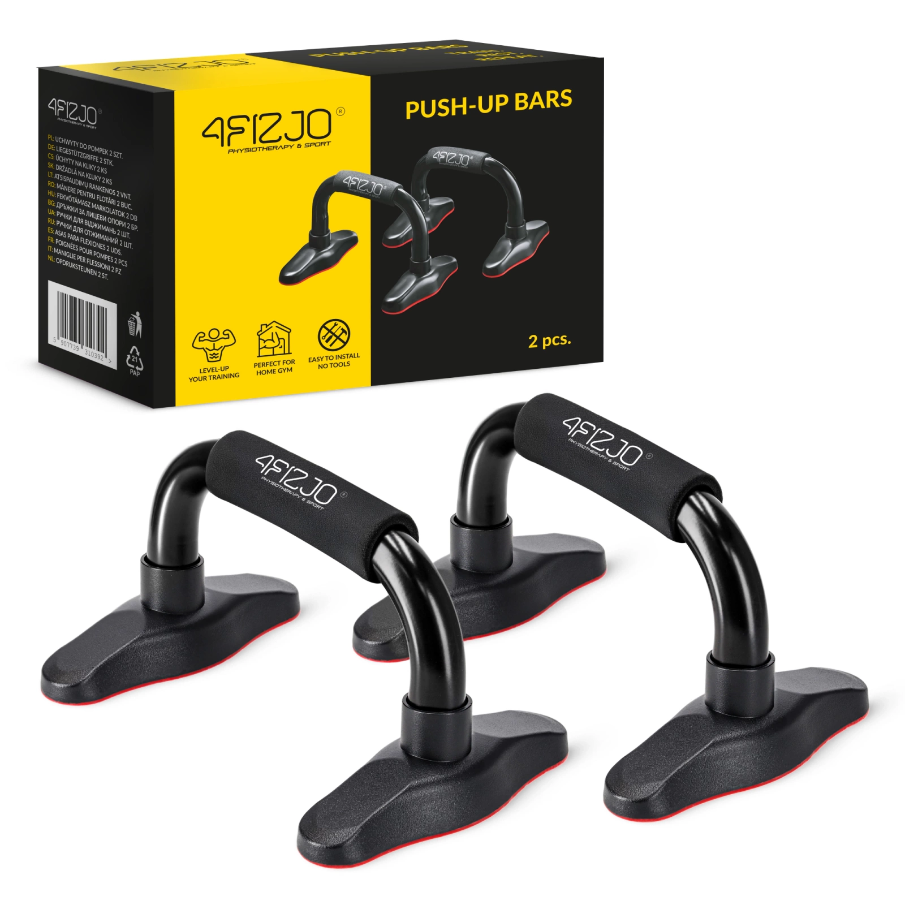

Uchwyty do pompek

Zastanawiasz się, jak możesz urozmaicić ćwiczenia, by były bardziej efektywne? Postaw na stalowe paraletki, dzięki którym wprowadzisz do swojego planu treningowego nowe elementy. Plank na uchwytach, L-sit, a może V-sit? Dzięki nowym ćwiczeniom jeszcze szybciej poprawisz swoją formę, wzmocnisz mięśnie i zwiększysz sprawność organizmu. Nie musisz być profesjonalnym sportowcem czy uprawiać kalistenistykę, by w pełni skorzystać z zalet, jakie zapewnia trening z uchwytami do pompek. Sprawdzą się one również w przypadku osób, które ćwiczą amatorsko i za cel postawiły sobie wzmocnienie mięśni całego ciała.
Cena=28,99zł
- Paraletki zapewnią fizjologiczne ustawienie nadgarstków, dzięki czemu pomagają uniknąć przeciążeń i minimalizują ryzyko kontuzji.
- Podczas wykonywania ćwiczeń na paraletkach mięśnie wykonują pełniejsze ruchy, dzięki czemu szybciej się wzmacniają.
- Uchwyty do pompek pomagają zachować stabilną i prawidłową postawę.
| Parametr | Wartość |
|---|---|
| Materiał: | Stal |
| Średnica części chwytnej: | 32 mm |
| Udźwig paraletki: | 200kg |